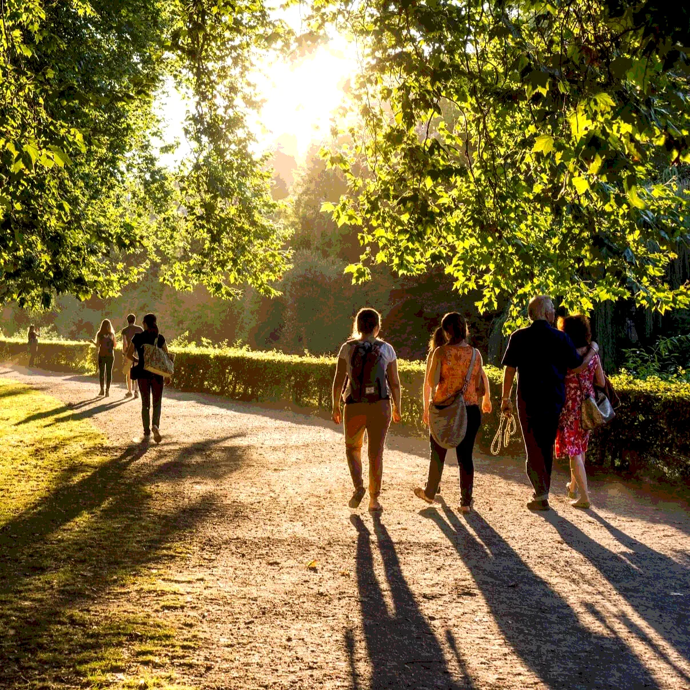
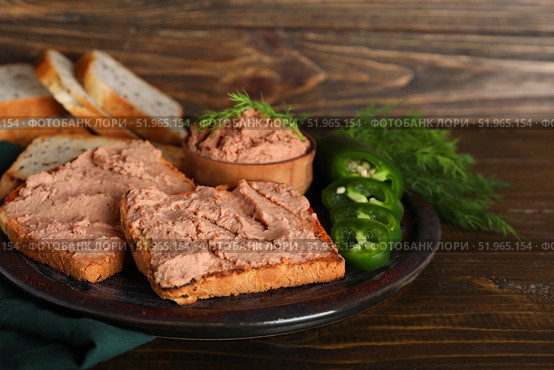
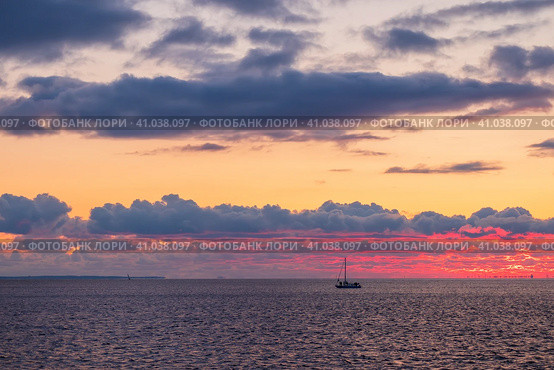

Подборка кадров из одного субботнего дня. Первая картинка загружается сразу, остальные — только при прокрутке (lazy loading).



💡 Проверка lazy loading: Откройте F12 → вкладка Network → перезагрузите страницу (Ctrl+Shift+R). Обратите внимание: первая картинка (утренний кофе) загрузилась сразу, а остальные — только когда вы докрутите до них.